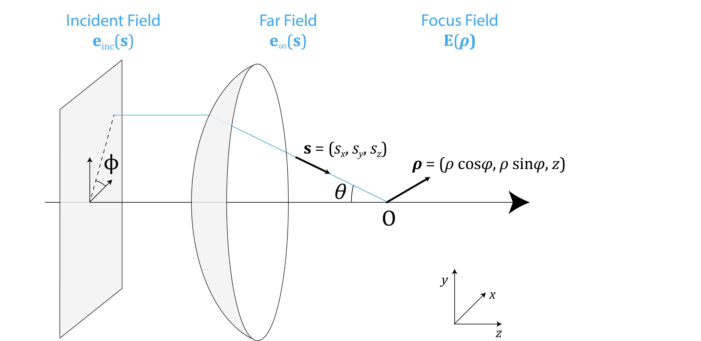
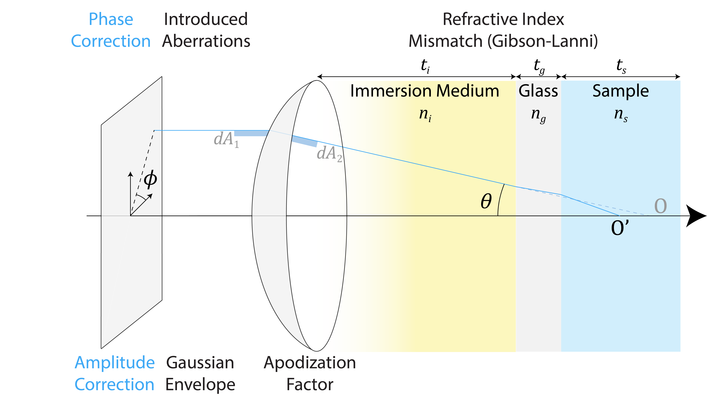
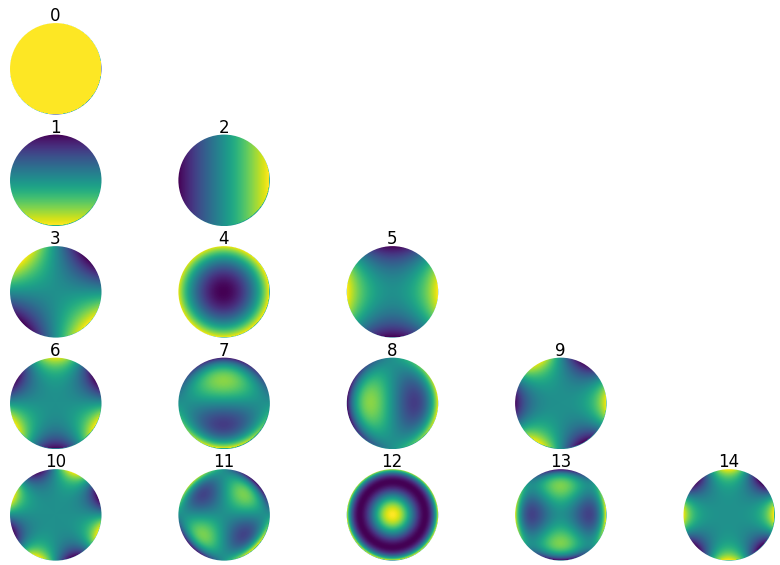

A Unifying Theory of PSF Models¶
The Richards-Wolf Model: Starting Point¶


Fig. 54 Geometry of the focusing of optical fields. An incident field \(\mathbf{e}_\mathrm{inc}\) is transformed by a focusing element into a converging spherical wave \(\mathbf{e}_\infty\). These fields are parametrized by a unit vector \(\mathbf{s}\), either in Cartesian coordinates \((s_x, s_y, s_z)\) or spherical coordinates \((\theta, \phi)\). The focus field \(\mathbf{E}\) is parametrized by \(\boldsymbol{\rho} = (x, y, z)\), rewritten here to introduce cylindrical coordinates \(\rho\) and \(\varphi\).¶
As depicted in Fig. 54, one obtains the PSF by computing the propagation of light after going through a focusing element, typically a microscope objective or lens. The incident field \(\mathbf{e}_\mathrm{inc}(\mathbf{s})\), also called pupil function, is represented by a disk with a maximal cutoff angle defined by the NA of the imaging system. The focusing element transforms the planar incident field into a spherical wave, \(\mathbf{e}_\infty(\mathbf{s})\), evaluated on the Gaussian reference sphere. This corresponds to an ensemble of far fields propagating with a direction \(\mathbf{s}\) and converge to the focal point \(O\). Our goal is to compute the focused electric field \(\mathbf{E}(\boldsymbol{\rho})\) near \(O\). Thanks to the reciprocity of light propagation, this model can also be extended to the emission of a point source to the back focal plane of a microscope objective, but this is not the focus of the current study.
The model introduced by Richards and Wolf [227] is the starting point that allows us to derive all the precise PSF models described in previous works. The focal field is given by a sum of plane waves with the direction \(\mathbf{s} = (s_x,s_y,s_z)\):
where \(\boldsymbol{\rho} = (x,y,z) = (\rho\cos\varphi, \rho\sin\varphi,z)\) is the position vector in the focal region of the lens, \(\mathbf{s} = (s_x,s_y,s_z) = (\sin\theta \cos\phi, \sin\theta \sin\phi, \cos\theta)\) is a unit vector describing the direction of an incoming ray, \(f\) is the focal length of the lens, \(k = \frac{2\pi n}{\lambda}\) is the wavenumber, \(\lambda\) is the wavelength, \(n\) is the refractive index of the propagation medium, and \(\mathbf{e}_\infty(\mathbf{s})\) describes the field distribution on the Gaussian reference sphere. We integrate over the set \(\Omega\) of solid angles defined on a region \(s_x^2 + s_y^2 \leq s_\mathrm{max}^2\), where \(s_\mathrm{max} = \frac{\mathrm{NA}}{n_i}\) is the cutoff determined by the NA and \(n_i\) is the refractive index of the immersion medium. The angle \(\theta\) is therefore defined within the immersion medium. We first describe different classes of models based on this simplified concise equation and introduce the correction factors later.
Scalar Models¶
As a first step, it is common to reply a scalar approximation to simplify calculations, especially in low-NA scenarios. In this case, the far field is equal to the incident field, so that \(e_\infty(\mathbf{s}) = e_\mathrm{inc}(\mathbf{s})\) The focal field is then given by:
This expression involves a two-dimensional integral over the pupil disk. Two possible parametrizations yield the two classes of models described previously.
Cartesian parameterization¶
The Cartesian parametrization utilizes both \(s_x\) and \(s_y\) coordinates with \(\mathrm{d}\Omega = \mathrm{d}s_x \mathrm{d}s_y / s_z\), resulting in:
In this form, the focused field at a \(z\)-transverse plane is given by the 2D inverse Fourier transform of \((e_\infty(s_x,s_y)\exp{\left\{\mathrm{i} k s_z z\right\}} / s_z)\), where \(s_z = \sqrt{1-s_x^2-s_y^2}\). Thus, the Cartesian parametrization of the Richards-Wolf integral leverages the speed and efficiency of the Fast Fourier Transform (FFT) algorithm.
Spherical parameterization¶
Alternatively, the spherical approach parametrizes the problem with two angles \(\theta \in [0, \theta_{\max}]\) (the maximum angle \(\theta_{\max}\) is determined by the NA) and \(\phi \in [0, 2\pi]\), as depicted in Fig. 54. With \(\boldsymbol{\rho} = (x,y,z) = (\rho\cos\varphi, \rho\sin\varphi, z)\) and \(\mathrm{d}\Omega = \sin\theta \mathrm{d}\theta \mathrm{d}\phi\), the field in the focal region can be rewritten as:
Eq. (151) can be further simplified if one assumes that the pupil function is axisymmetric (rotational invariant), i.e. \(e_\infty(\theta, \phi) = e_\infty(\theta)\). In this case the integral over \(\phi\) in Eq. (151) can be computed explicitly using the Bessel function \(J_0\), which leads to
Here, we have used the following identities where \(J_n\) is the Bessel function of \(n\)th-order of the first kind:
Defocus is included in these models using the defocus phase factor \(\exp{\left\{\mathrm{i}k s_z z\right\}} = \exp{\left\{\mathrm{i}kz \cos\theta\right\}}\) where \(z\) is the defocus distance. This expression, also known as angular spectrum propagation [43], accurately models the propagation of electric field in a homogeneous medium.
Vectorial Models¶
As the electric field is a vectorial quantity, vectorial propagation models are necessary to accurately account for the propagation and crosstalk between the different components of the vector field. Precise vectorial models are crucial for high-NA systems, where the need to consider high angles arises.
In the vectorial model, the dependence of the far field \(\mathbf{e}_\infty(\mathbf{s})\) on the incident field \(\mathbf{e}_{\mathrm{inc}}(\mathbf{s})\) now requires us to perform the basis change from a cylindrical to a spherical coordinate system, as in
where \(\mathbf{e}_\mathrm{inc} = [e_\mathrm{inc}^x, e_\mathrm{inc}^y, 0]\). The so-called Fresnel transmission coefficients \(q_s\) and \(q_p\) have been introduced to account for partial reflection at interfaces, which depend on the polarization state and the incidence angle. For each polarization, the coefficients correspond to the product of all transmission coefficients for each interface from medium \(m\) to \(m+1\):
It is worth noting that in the low-NA limit (\(\theta=0\)) with \(q_s = q_p = 1\), Eq. (155) simplifies to \(\mathbf{e}_\infty(\theta,\phi) = \mathbf{e}_{\mathrm{inc}}(\theta,\phi)\). This explains why the scalar model did not account for this geometric change of variables.
Cartesian Parameterization¶
The Cartesian parametrization of the vectorial model consists of the following integral
which essentially boils down to the computation of the inverse Fourier Transform of \((\mathbf{e}_\infty(s_x, s_y) \exp{\left\{\mathrm{i}k s_z z\right\}}/s_z)\), similar to the scalar case.
Spherical Parameterization¶
With the help of coordinate transformations similar to the scalar case, we can derive the spherical parametrization of the field in the focal region as
Inserting Eq. (155) into Eq. (159) and using the axisymmetric assumption of the incident field, we can obtain a simplified expression for the focal field as
where
with \(a\in\{x,y\}\).
Additional Factors¶
Precise PSF models commonly include several physical effects which may affect the true PSF. They are added as amplitude factors \(a(\mathbf{s})\) and phase factors \(W(\mathbf{s})\) in the original integral over solid angles in Eq. (148), leading to
Eq. (164) enables us to express these correction factors in full generality for both vectorial and scalar models, and for both Cartesian and spherical parametrizations. We present a detailed list of these correction factors in the following sections and their graphical description in Fig. 55.


Fig. 55 Correction factors and associated physical origins. Top part: phase correction factors, either introduced on the incident field or due to refraction. Bottom part: amplitude correction factors that model the incident beam envelope or apodization factor for energy conservation.¶
Phase Correction Factors¶
Gibson-Lanni Factor: Correction for Refractive Index Mismatch¶
Microscopes typically have stratified layers of different refractive indices. The biological sample is usually aqueous, on top of which we place a coverslip made of glass, and the whole sample is then put in a water or oil immersion medium to increase the numerical aperture. The microscope objectives are designed to provide aberration-free images in a specific setting with design values for refractive indices and thicknesses of each layer. Any mismatch introduces spherical aberrations due to refraction at the interface between the layers. These aberrations can be computed using the following formula expressed in spherical coordinates
where \(\sin\theta\) is computed as \(\sin\theta = \frac{NA}{n_i}\sqrt{s_x^2+s_y^2}\). The quantities \(n_s\), \(n_i\), \(n_g\) are the refractive indices of the sample, immersion medium, and glass respectively, \(t_s\), \(t_i\), \(t_g\) are the thicknesses of the sample, immersion medium, and glass respectively, and their counterparts with stars are the design conditions.
In practice, it is challenging in practice to assess the thickness of the immersion medium. Since this distance is manually tuned to obtain an optimal focus of a point emitter at depth \(t_s\) on the camera, this focusing condition gives the following relation:
which can be inserted in Eq. (165). This particular expression has first been derived for the spherical scalar case in [197] and extended to the spherical vectorial case in [238, 239].
Arbitrary Phase Aberrations¶
More general aberration models can be introduced to describe imperfections in the optical system, for the benefit of PSF engineering or wavefront shaping. Designed aberrations can be introduced purposefully via a phase mask or a spatial light modulator at the pupil plane. These aberrations are often parametrized by Zernike polynomials (a set of orthonormal polynomials defined on the pupil disk, see Fig. 56) or by a direct fixed phase mask to obtain desired PSFs.


Fig. 56 Images of the first 15 Zernike polynomials. Generated using the library ZernikePy.¶
We write it in the most general case as
Eq. (167) is composed of the sum of two terms:
an inner product of the first \(K\) Zernike polynomials and their corresponding coefficients \(c_k\), and
an additional term \(W_0\) which can be used to include special cases not covered by the Zernike polynomials, e.g. a vortex phase ramp that leads to a donut PSF as we have seen in Optimal Excitation Patterns in MINFLUX via PSF Engineering.
Since the arbitrary phase aberrations described in Eq. (167) may not necessarily be axisymmetric, they can only be applied to the most general, Cartesian parametrization.
Amplitude Correction Factors¶
Apodization Factor¶
The apodization factor is an amplitude correction factor to ensure energy conservation during the change of basis from cylindrical coordinates (incident field \(\mathbf{e}_\mathrm{inc}\)) to spherical coordinates (far field \(\mathbf{e}_\infty\)), which takes prominence especially for high-NA objectives. Since areas of cross-sections are modified, the field is also rescaled accordingly. Such rescaling ensures that the differential areas \(dA_1\) on the plane and \(dA_2\) on the sphere, as shown in Fig. 55, remain consistent under the change of coordinates. The corresponding correcting factor is
when going from cylindrical to spherical in the focusing configuration of Fig. 54.
Gaussian Envelop¶
The incident illumination can also depart from a perfect uniform plane wave. In particular, we often assume a Gaussian and express it as
where the constant \(s_\mathrm{env}\) determines the size of the envelope.